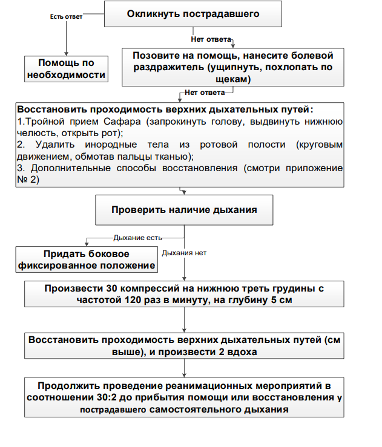
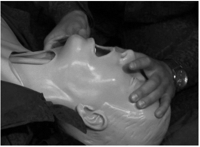
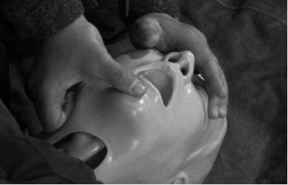
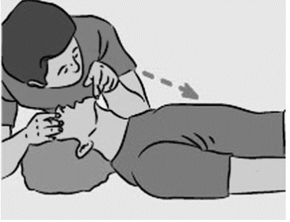
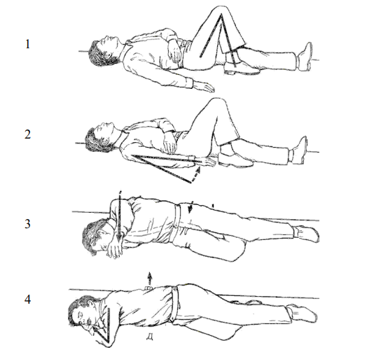

Базовые реанимационные мероприятия
По данным разных исследований в большинстве случаев, когда внезапно ухудшается состояния больного, время, прошедшее с момента вызова медицинской помощи до ее приезда на место происшествия составляет 8 - 10 минут и более. В этот отрезок времени выживание пострадавшего зависит от раннего начала выполнения свидетелями первых действий по спасению жизни.
Многие пострадавшие имеют шанс на выживание, если окружающие быстро окажут помощь. Больным с остановкой кровообращения необходима незамедлительная сердечно-лёгочная реанимация, она позволяет поддерживать малый, но критически достаточный кровоток в сосудах сердца и головном мозге, а также увеличивает вероятность того, что дефибрилляция восстановит эффективный ритм. Массаж грудной клетки особенно важен в ситуации, когда дефибрилляция не может быть выполнена в первые 4-5 минут после остановки сердца.
Каждая минута задержки с СЛР снижает выживаемость на 7-10%. Если СЛР проводится очевидцем несчастного случая, то шанс на выживание уменьшается медленнее, составляя в среднем 3-4% в минуту. В целом, проведение СЛР удваивает или утраивает выживаемость в случае остановки кровообращения.
Последовательность действий при реанимации объединили в алгоритм, состоящий из взаимосвязанных мероприятий, позволяющих вернуть к жизни человека, у которого произошла остановка кровообращения. Комплекс мероприятий получил название «Цепочка выживания». Все мероприятия объединены в четыре группы:
1. Раннее выявление критического состояния и вызов помощи:
вызвать медицинскую помощь или местную спасательную службу, т.е. "службу 112".
2. Раннее проведение СЛР окружающим:
незамедлительная СЛР может удвоить или утроить шансы пострадавшего
3. Ранняя дефиблиряция :
СЛР вместе с дефибрилляцией в течении 3-5 мин. с момента возникновения остановки кровообращения
может увеличить вероятность выживания до 49-75%. Каждая минута промедления с дефибрилляцией
уменьшает вероятность выживания на 10-15%
4. Ранняя расширенная СЛР и постреанимационная помощь:
качество лечения в послереанимационном периоде влияет на исход
Учитывая внезапность возникновения критических для здоровья людей ситуаций, интервал времени от момента остановки кровообращения или дыхания до прибытия медицинской помощи, стремительность изменений в организме, можно заключить, что жизнь пострадавшего в первые минуты инцидента зависит от очевидцев происшествия. Для оказания первой помощи людям, находящимся в критическом состоянии, на месте возникновения этого состояния, разработан комплекс жизнеспасающих мероприятий, не требующих медицинских знаний, специального (помимо защитных средств) оборудования и использования лекарственных препаратов – базовые реанимационные мероприятия (схема 1).
Схема 1. Базовые реанимационные мероприятия

Способы восстановления проходимости верхних дыхательных путей.
Подойдя к пострадавшему необходимо окликнуть его и нанести болевой раздражитель. При отсутствии у пострадавшего сознания наиболее типичным участком обструкции дыхательных путей является гортанно-глоточная область. У больных в бессознательном состоянии обструкция возникает при срединном положении головы или ее наклоне вперед (приведении подбородка к груди). В этих случаях расслабленные мышцы языка и шеи не могут поднять корень языка и надгортанник над задней стенкой глотки. Во время вдоха корень языка западает, смещая надгортанник к входу в гортань. Запрокидывание головы приводит к растяжению передних мышц шеи, за счет чего корень языка приподнимается и отходит от задней стенки глотки, а надгортанник – от входа в гортань.
Примерно у 30 % больных без сознания наблюдается обструкция носовых ходов дыхательных путей мягким нёбом во время выдоха. Кроме того, они могут быть обтурированы слизью или сгустками крови. В таком случае требуется открывание рта, однако это уменьшает растяжение передних мышц шеи и может возникнуть обструкция на уровне гортаноглотки, поэтому для восстановления растяжения шейных мышц и устранения непроходимости дополнительно требуется выдвижение вперед нижней челюсти. Запрокидывание головы, выдвижение вперед нижней челюсти и открывание рта составляют тройной прием Сафара.
Чтобы запрокинуть голову одну руку помещают на границу волосистой части головы, оставляя свободными большой и указательный палец руки для того, чтобы зажать нос пациента на случай, если придется проводить искусственное дыхание, надавливают на лоб больного, а другой приподнимают и поддерживают подбородок, заведя нижние резцы за верхние (рис. 3). Это обеспечивает натяжение передних мышц шеи. Подбородок пациента необходимо поддерживать осторожно, не сдавливая шею, что само по себе вызывает обтурацию дыхательных путей.

Рисунок 3. Запрокидывание головы.
Для выдвижения вперед нижней челюсти ее восходящую ветвь около ушной раковины захватывают 2–5-м (или 2–4-м) пальцами, большие пальцы помещают на подбородок больного, приоткрывают ими рот, одновременно выдвигая нижнюю челюсть с силой вперед (вверх) (рис. 4). Челюсть нужно выдвинуть так, чтобы нижние резцы выступали впереди верхних. Удерживая одной рукой рот раскрытым, другой зажимают нос и удерживают голову в запрокинутом состоянии. Такое положение рук наиболее удобно для проведения искусственной вентиляции по методу «изо рта в рот».

Рисунок 4. Выдвижение вперед нижней челюсти.
Нельзя захватывать горизонтальную ветвь нижней челюсти, так как это может привести к закрыванию рта.
Нельзя располагать валик под шеей или допускать приведение подбородка к груди, так как это способствует обтурации верхних дыхательных путей языком. Данный прием противопоказан при патологии в атлантозатылочном суставе или подозрении на повреждение позвонков в шейном отделе позвоночника. В этом случае проводят двойной прием без запрокидывания головы.
Если в ротовой полости или в глотке оказываются инородные тела, кровь или рвотные массы, являющиеся причиной обтурации дыхательных путей, их необходимо удалить пальцем, обернутым марлей, платком, тканью. Голова больного при этом должна быть повернута в сторону.
Для восстановления проходимости верхних дыхательных путей, так же могут быть использованы дополнительные способы
После восстановления проходимости верхних дыхательных путей необходимо проверить у пострадавшего наличие дыхания, для чего оказывающий помощь прикладывает ухо ко рту и носу пострадавшего и смотрит на экскурсию грудной клетки (рис. 5). В течение первых минут после остановки сердца у пострадавшего может отмечаться едва заметное, либо нечастое, шумное дыхание. Нельзя его путать с нормальным дыханием. На определение дыхания у пациента, используя зрение, слух и тактильное ощущение, следует отводить не более 10 с. Если есть сомнения по поводу наличия нормального дыхания, необходимо действовать так, как в случае его отсутствия.

Рисунок 5. Проверка наличия дыхания (видеть, слышать, ощущать)
Если дыхание нормальное придайте телу пострадавшего безопасное положение (на боку, таким образом, чтобы предупредить западение языка или в случае возникновения рвоты, попадания остатков пищи в дыхательные пути) (рис.6). Для этого сгибают ногу в коленном и тазобедренном суставах (1), подводят руку с той же стороны под ягодицу (2), поворачивают пострадавшего набок (3). Руку, находящуюся сверху, укладывают под голову, голову немного запрокидывают (4). Проверяют дыхание у пострадавшего каждые 5-7 минут.

Рисунок 6. Этапы придания бокового фиксированного положения.
При отсутствии нормального дыхания необходимо приступить к проведению массажа сердца.